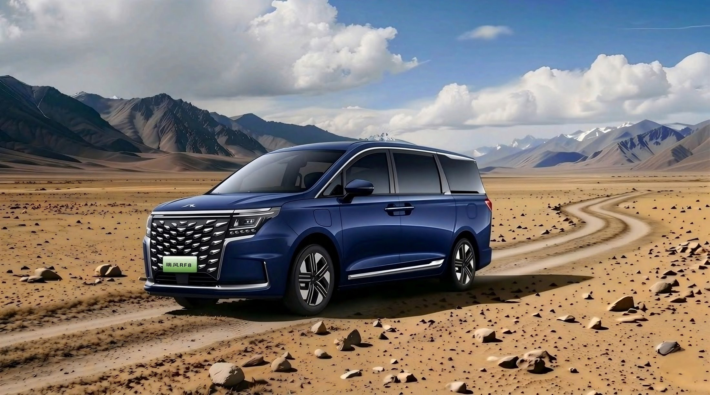
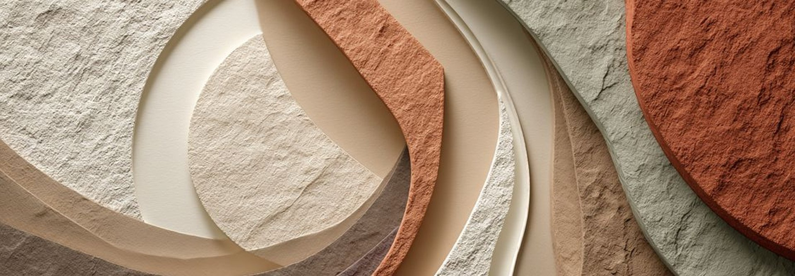
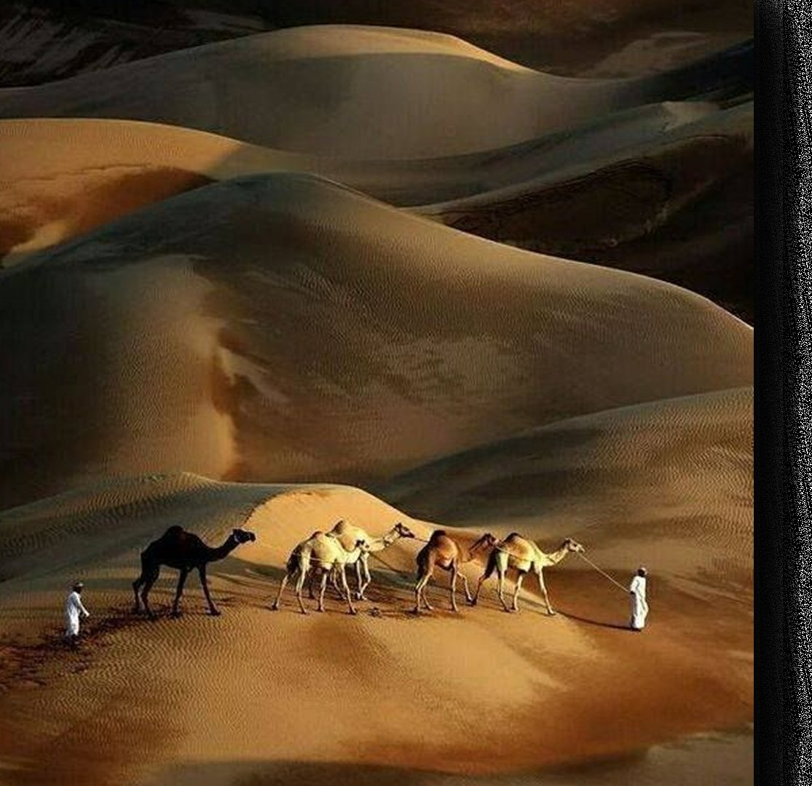
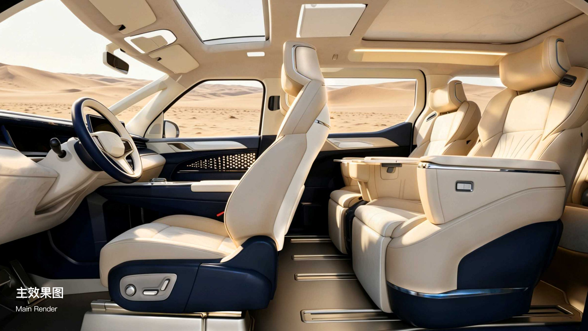
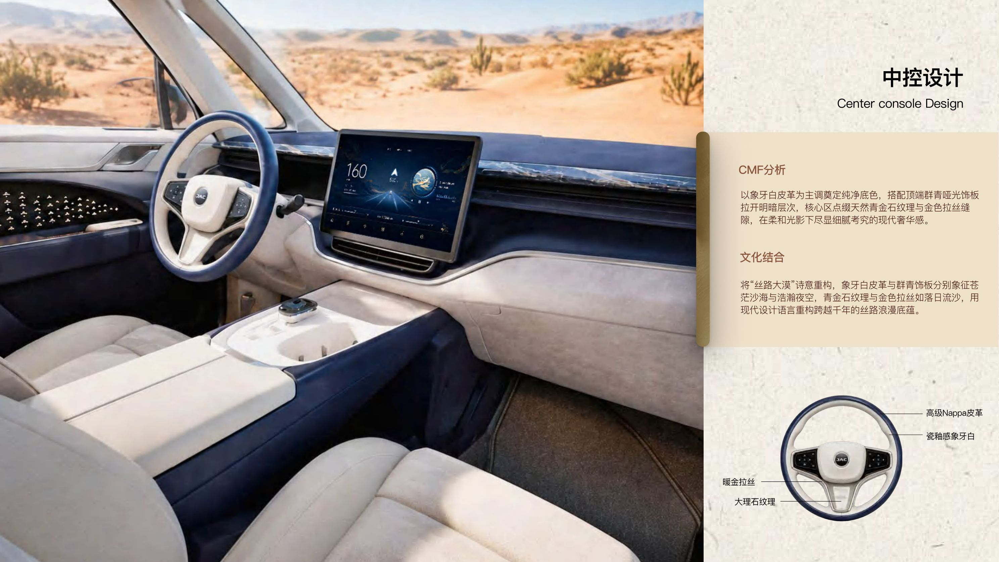
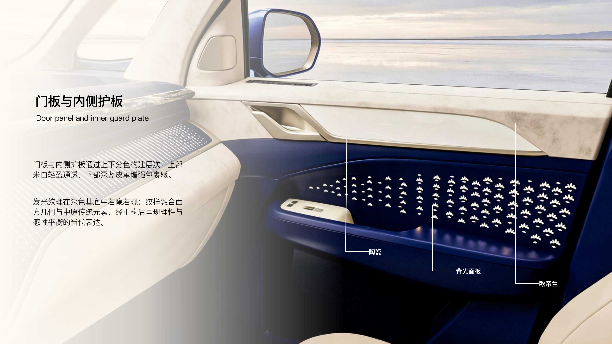
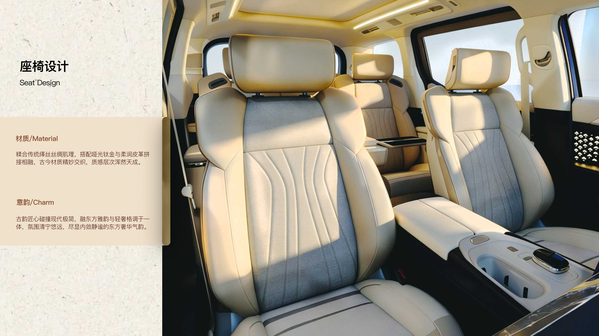
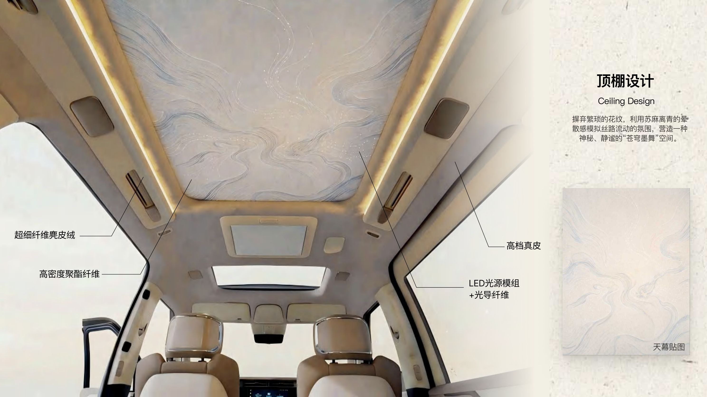
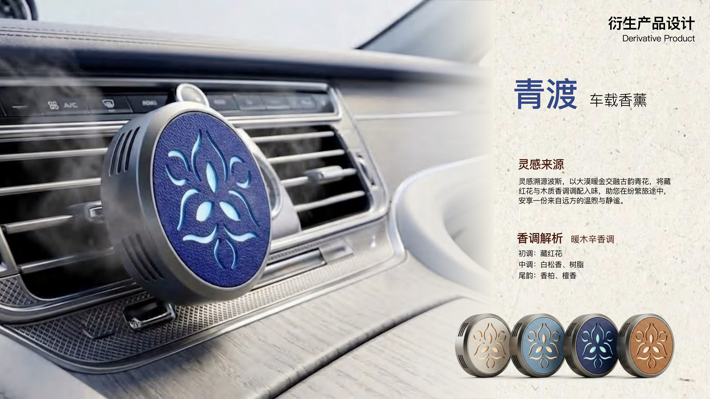
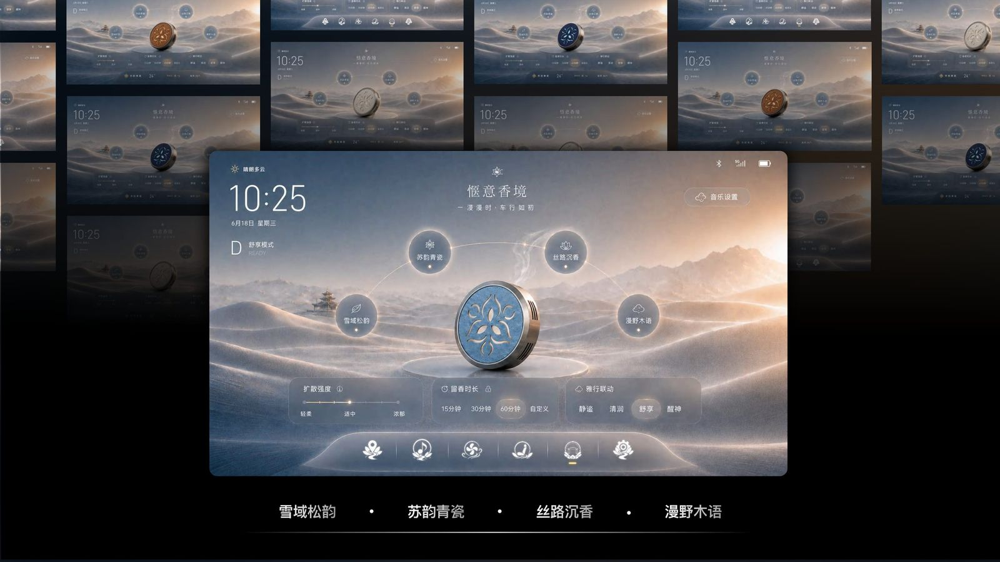

千年丝路，万里波斯，苏麻离青随驼队远来，与东方瓷泥淬火相遇，淬炼出青花瓷史上最深邃的色彩传奇。
本方案以「苏麻离青」为名，将这份矿物的深邃与丝路的暖意，注入瑞风 RF8 的座舱空间，让东方雅韵与现代工业美学在移动中交融共生。

本作品是瑞风 RF8 的内饰 CMF、HMI 设计方案，以「丝路灵感、矿物釉色、空间美学」为核心，提炼象牙白、群青蓝、暖金色构建冷暖共生的色彩体系，延伸出「青渡」车载香薰，打造视觉、触觉、嗅觉联动的「移动丝路驿站」。
如翻动一本实体图册——点击右半页或按 → 翻到下一页，左半页或 ← 返回，亦可拖动书页。CMF 与 HMI 全部图版汇于一册。
以瑞风 RF8 座舱为载体，解构「苏麻离青」的矿物质感，融合丝路大漠暖金与青花瓷深蓝，完成一套东方雅韵的智能座舱 CMF 设计方案。

当千年丝路的苍茫沙海与苏麻离青的深邃夜空在现代智能座舱中诗意交融——细腻的矿物触感与跃动的落日金线，冷暖共生，化现代工业为东方雅韵。

以象牙白皮革为主调奠定纯净底色，顶端群青哑光饰板拉开明暗层次；核心区点缀天然青金石纹理与金色拉丝缝隙，柔和光影下尽显细腻考究的现代奢华感。

上下分色构建层次：上部米白轻盈通透，下部深蓝皮革增强包裹感。发光纹理在深色基底中若隐若现；纹样融合西方几何与中原传统元素，经重构后焕新呈现。

糅合传统缂丝丝绸肌理，搭配哑光钛金与柔润皮革拼接相融，古今材质精妙交织，质感层次浑然天成。古韵匠心碰撞现代极简，融东方雅韵与轻奢格调于一体。

摒弃繁琐花纹，利用苏麻离青的晕散感模拟丝路流动的氛围，营造神秘静谧的「苍穹墨舞」空间。天幕以 LED 光源模组叠加光导纤维，星点流转，宛若大漠夜空。

灵感溯源波斯，以大漠暖金交融古韵青花，将藏红花与木质香调调配入味。暖木辛香——初调藏红花，中尾调层层递进，助您在纷繁旅途中安享一份来自远方的温煦与静谧。
以青蓝雾化沙丘与暖金晨光为视觉基底，玻璃拟态、低饱和蓝灰与暖金光影贯穿仪表、中控与各功能页面，构建统一的未来东方座舱交互语言。
开机界面以青蓝雾化沙丘与暖金晨光构成沉浸式背景，营造静谧、高级且具未来东方美学气质的 HMI 氛围，为整套座舱交互定下基调。
以 3D 沉浸式导航场景作为视觉核心，将速度、电量、续航、音乐、路线信息与底部功能入口整合于同一界面，形成聚合式首页。
将播放功能与沙漠光影场景结合，弱化传统列表式界面，突出专辑封面、播放进度与核心控制；雾化背景、柔和光晕与留白营造沉浸、情绪化的车内听觉体验。
将气流以可视化方式呈现，座椅、风向、温度与风量控制围绕中心区域展开；半透明面板与柔和蓝色气流效果使操作更直观，让舒适系统更具空间感与科技感。
以双座椅模型作为视觉中心，周围分布座椅姿态、按摩、通风加热与记忆功能；真实座椅形态与图形化控制结合，降低操作理解成本，强化 MPV 场景的舒适与尊享体验。
采用分栏式信息结构，左侧功能导航、右侧具体设置内容；延续玻璃拟态、低饱和蓝灰与暖金光影风格，在清晰易用的同时与整套 HMI 视觉语言保持统一。
同一套 HMI 视觉语言衍生四种主题氛围，随心境与场景切换。

选取一件汽车周边产品，分析外观覆盖件的材料与工艺，拆解装配结构并完成数字化建模。
把结构研究报告、拆解图与建模渲染图发给我即可。我会补上材料工艺解析、装配结构拆解图与数字化模型展示，统一排版到本单元。